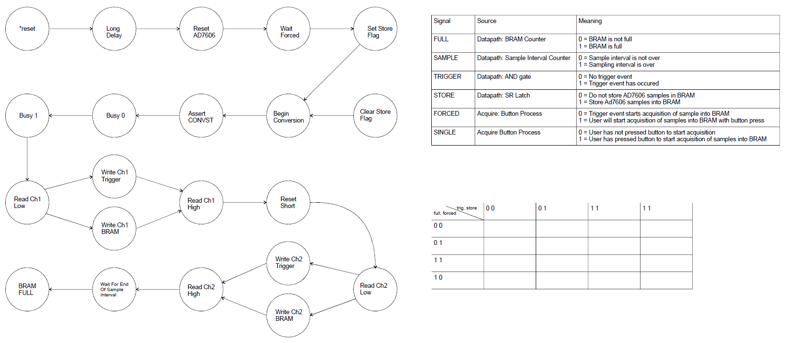

| Lecture | 28 |
| Handout | acquireToHdmiControl.pdf |
| Class Objectives | Have a firm understanding of the control word needed to realize the acquireToHDMI component. |
Datapath
You have already seen the datapath. In this lecture, we will investigate how to get this datapath to do all the functions required of the acquireToHdmi component.
Let's spend a few minutes talking about the functionality we want from this datapath as it will make the organization of the control unit more clear.
Control Word Table
The control word table (CWT) has a column for each control signal in the datapath and the external world. There are a lot of such signals, they are included in the handout. You will find an Excel file in the lab assignment which is very useful.Control

The difficult part of this table is deciding what to do at the Wait For End of Sample Interval.